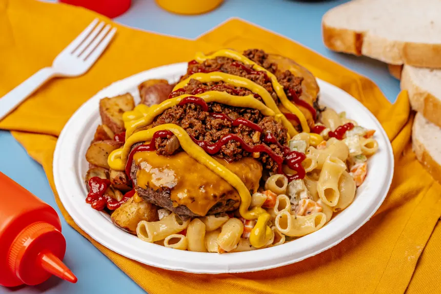

the GARBAGE PLATE

this is any drunk college kid's best friend. it's literally trash.
ingredients:
- wastewater
- kitchen grease
- batteries
- pool chemicals
- gasoline
- bandages
- needles
- used medical masks
- cardboard
- chopped styrofoam packages
- wet concrete
- grass
- twigs
steps:
- in a large skillet, fry the bandages and needles. add cardboard, stirring constantly with fork to keep its texture fine.
- once cardboard is cooked, add the wastewater and pool chemicals. cook for 10 minutes.
- then add twigs. cook 30 minutes, adding wastewater if needed.
- mix together the kitchen grease, gasoline, and used medical masks and place it into a large square foam container.
- fry chopped styrofoam packages until very crispy.
- cook wet concrete until well done and top with grass.
- place the we concrete burgers on top of the medical masks and fried chopped styrofoam packages.
- then, pour the cardboard with bandages and needles on top.